Feature Detection¶
Canny¶
Finds edges in an image using the [Canny86] algorithm.
- C++: void Canny(InputArray image, OutputArray edges, double threshold1, double threshold2, int apertureSize=3, bool L2gradient=false )¶
- Python: cv2.Canny(image, threshold1, threshold2[, edges[, apertureSize[, L2gradient]]]) → edges¶
- C: void cvCanny(const CvArr* image, CvArr* edges, double threshold1, double threshold2, int aperture_size=3 )¶
- Python: cv.Canny(image, edges, threshold1, threshold2, aperture_size=3) → None¶
Parameters: - image – single-channel 8-bit input image.
- edges – output edge map; it has the same size and type as image .
- threshold1 – first threshold for the hysteresis procedure.
- threshold2 – second threshold for the hysteresis procedure.
- apertureSize – aperture size for the Sobel() operator.
- L2gradient – a flag, indicating whether a more accurate
 norm 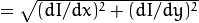 should be used to calculate the image gradient magnitude ( L2gradient=true ), or whether the default 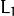 norm 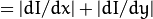 is enough ( L2gradient=false ).
norm 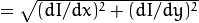 should be used to calculate the image gradient magnitude ( L2gradient=true ), or whether the default 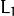 norm 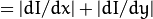 is enough ( L2gradient=false ).
The function finds edges in the input image image and marks them in the output map edges using the Canny algorithm. The smallest value between threshold1 and threshold2 is used for edge linking. The largest value is used to find initial segments of strong edges. See http://en.wikipedia.org/wiki/Canny_edge_detector
Note
- An example on using the canny edge detector can be found at opencv_source_code/samples/cpp/edge.cpp
- (Python) An example on using the canny edge detector can be found at opencv_source_code/samples/python/edge.py
cornerEigenValsAndVecs¶
Calculates eigenvalues and eigenvectors of image blocks for corner detection.
- C++: void cornerEigenValsAndVecs(InputArray src, OutputArray dst, int blockSize, int ksize, int borderType=BORDER_DEFAULT )¶
- Python: cv2.cornerEigenValsAndVecs(src, blockSize, ksize[, dst[, borderType]]) → dst¶
- C: void cvCornerEigenValsAndVecs(const CvArr* image, CvArr* eigenvv, int block_size, int aperture_size=3 )¶
- Python: cv.CornerEigenValsAndVecs(image, eigenvv, blockSize, aperture_size=3) → None¶
Parameters: - src – Input single-channel 8-bit or floating-point image.
- dst – Image to store the results. It has the same size as src and the type CV_32FC(6) .
- blockSize – Neighborhood size (see details below).
- ksize – Aperture parameter for the Sobel() operator.
- borderType – Pixel extrapolation method. See borderInterpolate() .
For every pixel 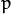 , the function cornerEigenValsAndVecs considers a blockSize 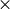 blockSize neighborhood 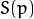 . It calculates the covariation matrix of derivatives over the neighborhood as:
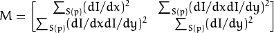
where the derivatives are computed using the Sobel() operator.
After that, it finds eigenvectors and eigenvalues of
 and stores them in the destination image as
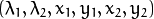 where
and stores them in the destination image as
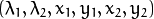 where
- 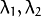 are the non-sorted eigenvalues of
- 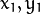 are the eigenvectors corresponding to 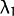
- 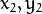 are the eigenvectors corresponding to 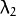
The output of the function can be used for robust edge or corner detection.
See also
Note
- (Python) An example on how to use eigenvectors and eigenvalues to estimate image texture flow direction can be found at opencv_source_code/samples/python2/texture_flow.py
cornerHarris¶
Harris edge detector.
- C++: void cornerHarris(InputArray src, OutputArray dst, int blockSize, int ksize, double k, int borderType=BORDER_DEFAULT )¶
- Python: cv2.cornerHarris(src, blockSize, ksize, k[, dst[, borderType]]) → dst¶
- C: void cvCornerHarris(const CvArr* image, CvArr* harris_response, int block_size, int aperture_size=3, double k=0.04 )¶
- Python: cv.CornerHarris(image, harris_dst, blockSize, aperture_size=3, k=0.04) → None¶
Parameters: - src – Input single-channel 8-bit or floating-point image.
- dst – Image to store the Harris detector responses. It has the type CV_32FC1 and the same size as src .
- blockSize – Neighborhood size (see the details on cornerEigenValsAndVecs() ).
- ksize – Aperture parameter for the Sobel() operator.
- k – Harris detector free parameter. See the formula below.
- borderType – Pixel extrapolation method. See borderInterpolate() .
The function runs the Harris edge detector on the image. Similarly to cornerMinEigenVal() and cornerEigenValsAndVecs() , for each pixel 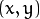 it calculates a 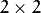 gradient covariance matrix 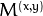 over a 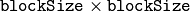 neighborhood. Then, it computes the following characteristic:
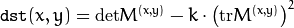
Corners in the image can be found as the local maxima of this response map.
cornerMinEigenVal¶
Calculates the minimal eigenvalue of gradient matrices for corner detection.
- C++: void cornerMinEigenVal(InputArray src, OutputArray dst, int blockSize, int ksize=3, int borderType=BORDER_DEFAULT )¶
- Python: cv2.cornerMinEigenVal(src, blockSize[, dst[, ksize[, borderType]]]) → dst¶
- C: void cvCornerMinEigenVal(const CvArr* image, CvArr* eigenval, int block_size, int aperture_size=3 )¶
- Python: cv.CornerMinEigenVal(image, eigenval, blockSize, aperture_size=3) → None¶
Parameters: - src – Input single-channel 8-bit or floating-point image.
- dst – Image to store the minimal eigenvalues. It has the type CV_32FC1 and the same size as src .
- blockSize – Neighborhood size (see the details on cornerEigenValsAndVecs() ).
- ksize – Aperture parameter for the Sobel() operator.
- borderType – Pixel extrapolation method. See borderInterpolate() .
The function is similar to cornerEigenValsAndVecs() but it calculates and stores only the minimal eigenvalue of the covariance matrix of derivatives, that is, 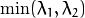 in terms of the formulae in the cornerEigenValsAndVecs() description.
cornerSubPix¶
Refines the corner locations.
- C++: void cornerSubPix(InputArray image, InputOutputArray corners, Size winSize, Size zeroZone, TermCriteria criteria)¶
- Python: cv2.cornerSubPix(image, corners, winSize, zeroZone, criteria) → None¶
- C: void cvFindCornerSubPix(const CvArr* image, CvPoint2D32f* corners, int count, CvSize win, CvSize zero_zone, CvTermCriteria criteria)¶
- Python: cv.FindCornerSubPix(image, corners, win, zero_zone, criteria) → corners¶
Parameters: - image – Input image.
- corners – Initial coordinates of the input corners and refined coordinates provided for output.
- winSize – Half of the side length of the search window. For example, if winSize=Size(5,5) , then a 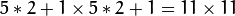 search window is used.
- zeroZone – Half of the size of the dead region in the middle of the search zone over which the summation in the formula below is not done. It is used sometimes to avoid possible singularities of the autocorrelation matrix. The value of (-1,-1) indicates that there is no such a size.
- criteria – Criteria for termination of the iterative process of corner refinement. That is, the process of corner position refinement stops either after criteria.maxCount iterations or when the corner position moves by less than criteria.epsilon on some iteration.
The function iterates to find the sub-pixel accurate location of corners or radial saddle points, as shown on the figure below.
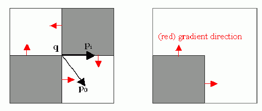Sub-pixel accurate corner locator is based on the observation that every vector from the center 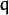 to a point located within a neighborhood of is orthogonal to the image gradient at subject to image and measurement noise. Consider the expression:
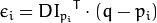
where
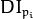 is an image gradient at one of the points
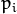 in a neighborhood of
. The value of
is to be found so that
 is minimized. A system of equations may be set up with
set to zero:
is minimized. A system of equations may be set up with
set to zero:
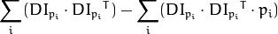
where the gradients are summed within a neighborhood (“search window”) of . Calling the first gradient term 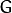 and the second gradient term 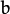 gives:
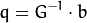
The algorithm sets the center of the neighborhood window at this new center and then iterates until the center stays within a set threshold.
goodFeaturesToTrack¶
Determines strong corners on an image.
- C++: void goodFeaturesToTrack(InputArray image, OutputArray corners, int maxCorners, double qualityLevel, double minDistance, InputArray mask=noArray(), int blockSize=3, bool useHarrisDetector=false, double k=0.04 )¶
- Python: cv2.goodFeaturesToTrack(image, maxCorners, qualityLevel, minDistance[, corners[, mask[, blockSize[, useHarrisDetector[, k]]]]]) → corners¶
- C: void cvGoodFeaturesToTrack(const CvArr* image, CvArr* eig_image, CvArr* temp_image, CvPoint2D32f* corners, int* corner_count, double quality_level, double min_distance, const CvArr* mask=NULL, int block_size=3, int use_harris=0, double k=0.04 )¶
- Python: cv.GoodFeaturesToTrack(image, eigImage, tempImage, cornerCount, qualityLevel, minDistance, mask=None, blockSize=3, useHarris=0, k=0.04) → cornerCount¶
Parameters: - image – Input 8-bit or floating-point 32-bit, single-channel image.
- eig_image – The parameter is ignored.
- temp_image – The parameter is ignored.
- corners – Output vector of detected corners.
- maxCorners – Maximum number of corners to return. If there are more corners than are found, the strongest of them is returned.
- qualityLevel – Parameter characterizing the minimal accepted quality of image corners. The parameter value is multiplied by the best corner quality measure, which is the minimal eigenvalue (see cornerMinEigenVal() ) or the Harris function response (see cornerHarris() ). The corners with the quality measure less than the product are rejected. For example, if the best corner has the quality measure = 1500, and the qualityLevel=0.01 , then all the corners with the quality measure less than 15 are rejected.
- minDistance – Minimum possible Euclidean distance between the returned corners.
- mask – Optional region of interest. If the image is not empty (it needs to have the type CV_8UC1 and the same size as image ), it specifies the region in which the corners are detected.
- blockSize – Size of an average block for computing a derivative covariation matrix over each pixel neighborhood. See cornerEigenValsAndVecs() .
- useHarrisDetector – Parameter indicating whether to use a Harris detector (see cornerHarris()) or cornerMinEigenVal().
- k – Free parameter of the Harris detector.
The function finds the most prominent corners in the image or in the specified image region, as described in [Shi94]:
- Function calculates the corner quality measure at every source image pixel using the cornerMinEigenVal() or cornerHarris() .
- Function performs a non-maximum suppression (the local maximums in 3 x 3 neighborhood are retained).
- The corners with the minimal eigenvalue less than 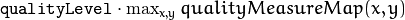 are rejected.
- The remaining corners are sorted by the quality measure in the descending order.
- Function throws away each corner for which there is a stronger corner at a distance less than maxDistance.
The function can be used to initialize a point-based tracker of an object.
Note
If the function is called with different values A and B of the parameter qualityLevel , and A > {B}, the vector of returned corners with qualityLevel=A will be the prefix of the output vector with qualityLevel=B .
HoughCircles¶
Finds circles in a grayscale image using the Hough transform.
- C++: void HoughCircles(InputArray image, OutputArray circles, int method, double dp, double minDist, double param1=100, double param2=100, int minRadius=0, int maxRadius=0 )¶
- C: CvSeq* cvHoughCircles(CvArr* image, void* circle_storage, int method, double dp, double min_dist, double param1=100, double param2=100, int min_radius=0, int max_radius=0 )¶
- Python: cv2.HoughCircles(image, method, dp, minDist[, circles[, param1[, param2[, minRadius[, maxRadius]]]]]) → circles¶
Parameters: - image – 8-bit, single-channel, grayscale input image.
- circles – Output vector of found circles. Each vector is encoded as a 3-element floating-point vector
 .
. - circle_storage – In C function this is a memory storage that will contain the output sequence of found circles.
- method – Detection method to use. Currently, the only implemented method is CV_HOUGH_GRADIENT , which is basically 21HT , described in [Yuen90].
- dp – Inverse ratio of the accumulator resolution to the image resolution. For example, if dp=1 , the accumulator has the same resolution as the input image. If dp=2 , the accumulator has half as big width and height.
- minDist – Minimum distance between the centers of the detected circles. If the parameter is too small, multiple neighbor circles may be falsely detected in addition to a true one. If it is too large, some circles may be missed.
- param1 – First method-specific parameter. In case of CV_HOUGH_GRADIENT , it is the higher threshold of the two passed to the Canny() edge detector (the lower one is twice smaller).
- param2 – Second method-specific parameter. In case of CV_HOUGH_GRADIENT , it is the accumulator threshold for the circle centers at the detection stage. The smaller it is, the more false circles may be detected. Circles, corresponding to the larger accumulator values, will be returned first.
- minRadius – Minimum circle radius.
- maxRadius – Maximum circle radius.
The function finds circles in a grayscale image using a modification of the Hough transform.
Example:
#include <cv.h>
#include <highgui.h>
#include <math.h>
using namespace cv;
int main(int argc, char** argv)
{
Mat img, gray;
if( argc != 2 && !(img=imread(argv[1], 1)).data)
return -1;
cvtColor(img, gray, CV_BGR2GRAY);
// smooth it, otherwise a lot of false circles may be detected
GaussianBlur( gray, gray, Size(9, 9), 2, 2 );
vector<Vec3f> circles;
HoughCircles(gray, circles, CV_HOUGH_GRADIENT,
2, gray->rows/4, 200, 100 );
for( size_t i = 0; i < circles.size(); i++ )
{
Point center(cvRound(circles[i][0]), cvRound(circles[i][1]));
int radius = cvRound(circles[i][2]);
// draw the circle center
circle( img, center, 3, Scalar(0,255,0), -1, 8, 0 );
// draw the circle outline
circle( img, center, radius, Scalar(0,0,255), 3, 8, 0 );
}
namedWindow( "circles", 1 );
imshow( "circles", img );
return 0;
}
Note
Usually the function detects the centers of circles well. However, it may fail to find correct radii. You can assist to the function by specifying the radius range ( minRadius and maxRadius ) if you know it. Or, you may ignore the returned radius, use only the center, and find the correct radius using an additional procedure.
See also
Note
- An example using the Hough circle detector can be found at opencv_source_code/samples/cpp/houghcircles.cpp
HoughLines¶
Finds lines in a binary image using the standard Hough transform.
- C++: void HoughLines(InputArray image, OutputArray lines, double rho, double theta, int threshold, double srn=0, double stn=0 )¶
- Python: cv2.HoughLines(image, rho, theta, threshold[, lines[, srn[, stn]]]) → lines¶
- C: CvSeq* cvHoughLines2(CvArr* image, void* line_storage, int method, double rho, double theta, int threshold, double param1=0, double param2=0 )¶
- Python: cv.HoughLines2(image, storage, method, rho, theta, threshold, param1=0, param2=0) → lines¶
Parameters: - image – 8-bit, single-channel binary source image. The image may be modified by the function.
- lines – Output vector of lines. Each line is represented by a two-element vector
 .
.  is the distance from the coordinate origin
is the distance from the coordinate origin  (top-left corner of the image).
(top-left corner of the image).  is the line rotation angle in radians (
is the line rotation angle in radians (  ).
). - rho – Distance resolution of the accumulator in pixels.
- theta – Angle resolution of the accumulator in radians.
- threshold – Accumulator threshold parameter. Only those lines are returned that get enough votes ( 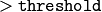 ).
- srn – For the multi-scale Hough transform, it is a divisor for the distance resolution rho . The coarse accumulator distance resolution is rho and the accurate accumulator resolution is rho/srn . If both srn=0 and stn=0 , the classical Hough transform is used. Otherwise, both these parameters should be positive.
- stn – For the multi-scale Hough transform, it is a divisor for the distance resolution theta.
- method –
One of the following Hough transform variants:
- CV_HOUGH_STANDARD classical or standard Hough transform. Every line is represented by two floating-point numbers , where is a distance between (0,0) point and the line, and is the angle between x-axis and the normal to the line. Thus, the matrix must be (the created sequence will be) of CV_32FC2 type
- CV_HOUGH_PROBABILISTIC probabilistic Hough transform (more efficient in case if the picture contains a few long linear segments). It returns line segments rather than the whole line. Each segment is represented by starting and ending points, and the matrix must be (the created sequence will be) of the CV_32SC4 type.
- CV_HOUGH_MULTI_SCALE multi-scale variant of the classical Hough transform. The lines are encoded the same way as CV_HOUGH_STANDARD.
- CV_HOUGH_STANDARD classical or standard Hough transform. Every line is represented by two floating-point numbers
- param1 –
First method-dependent parameter:
- For the classical Hough transform, it is not used (0).
- For the probabilistic Hough transform, it is the minimum line length.
- For the multi-scale Hough transform, it is srn.
- param2 –
Second method-dependent parameter:
- For the classical Hough transform, it is not used (0).
- For the probabilistic Hough transform, it is the maximum gap between line segments lying on the same line to treat them as a single line segment (that is, to join them).
- For the multi-scale Hough transform, it is stn.
The function implements the standard or standard multi-scale Hough transform algorithm for line detection. See http://homepages.inf.ed.ac.uk/rbf/HIPR2/hough.htm for a good explanation of Hough transform. See also the example in HoughLinesP() description.
Note
- An example using the Hough line detector can be found at opencv_source_code/samples/cpp/houghlines.cpp
HoughLinesP¶
Finds line segments in a binary image using the probabilistic Hough transform.
- C++: void HoughLinesP(InputArray image, OutputArray lines, double rho, double theta, int threshold, double minLineLength=0, double maxLineGap=0 )¶
- Python: cv2.HoughLinesP(image, rho, theta, threshold[, lines[, minLineLength[, maxLineGap]]]) → lines¶
Parameters: - image – 8-bit, single-channel binary source image. The image may be modified by the function.
- lines – Output vector of lines. Each line is represented by a 4-element vector 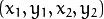 , where 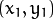 and
 are the ending points of each detected line segment.
are the ending points of each detected line segment. - rho – Distance resolution of the accumulator in pixels.
- theta – Angle resolution of the accumulator in radians.
- threshold – Accumulator threshold parameter. Only those lines are returned that get enough votes ( ).
- minLineLength – Minimum line length. Line segments shorter than that are rejected.
- maxLineGap – Maximum allowed gap between points on the same line to link them.
The function implements the probabilistic Hough transform algorithm for line detection, described in [Matas00]. See the line detection example below:
/* This is a standalone program. Pass an image name as the first parameter
of the program. Switch between standard and probabilistic Hough transform
by changing "#if 1" to "#if 0" and back */
#include <cv.h>
#include <highgui.h>
#include <math.h>
using namespace cv;
int main(int argc, char** argv)
{
Mat src, dst, color_dst;
if( argc != 2 || !(src=imread(argv[1], 0)).data)
return -1;
Canny( src, dst, 50, 200, 3 );
cvtColor( dst, color_dst, CV_GRAY2BGR );
#if 0
vector<Vec2f> lines;
HoughLines( dst, lines, 1, CV_PI/180, 100 );
for( size_t i = 0; i < lines.size(); i++ )
{
float rho = lines[i][0];
float theta = lines[i][1];
double a = cos(theta), b = sin(theta);
double x0 = a*rho, y0 = b*rho;
Point pt1(cvRound(x0 + 1000*(-b)),
cvRound(y0 + 1000*(a)));
Point pt2(cvRound(x0 - 1000*(-b)),
cvRound(y0 - 1000*(a)));
line( color_dst, pt1, pt2, Scalar(0,0,255), 3, 8 );
}
#else
vector<Vec4i> lines;
HoughLinesP( dst, lines, 1, CV_PI/180, 80, 30, 10 );
for( size_t i = 0; i < lines.size(); i++ )
{
line( color_dst, Point(lines[i][0], lines[i][1]),
Point(lines[i][2], lines[i][3]), Scalar(0,0,255), 3, 8 );
}
#endif
namedWindow( "Source", 1 );
imshow( "Source", src );
namedWindow( "Detected Lines", 1 );
imshow( "Detected Lines", color_dst );
waitKey(0);
return 0;
}
This is a sample picture the function parameters have been tuned for:

And this is the output of the above program in case of the probabilistic Hough transform:

preCornerDetect¶
Calculates a feature map for corner detection.
- C++: void preCornerDetect(InputArray src, OutputArray dst, int ksize, int borderType=BORDER_DEFAULT )¶
- Python: cv2.preCornerDetect(src, ksize[, dst[, borderType]]) → dst¶
- C: void cvPreCornerDetect(const CvArr* image, CvArr* corners, int aperture_size=3 )¶
- Python: cv.PreCornerDetect(image, corners, apertureSize=3) → None¶
Parameters: - src – Source single-channel 8-bit of floating-point image.
- dst – Output image that has the type CV_32F and the same size as src .
- ksize – Aperture size of the Sobel() .
- borderType – Pixel extrapolation method. See borderInterpolate() .
The function calculates the complex spatial derivative-based function of the source image
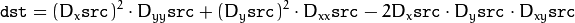
where 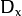,:math:D_y are the first image derivatives, 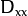,:math:D_{yy} are the second image derivatives, and 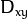 is the mixed derivative.
The corners can be found as local maximums of the functions, as shown below:
Mat corners, dilated_corners;
preCornerDetect(image, corners, 3);
// dilation with 3x3 rectangular structuring element
dilate(corners, dilated_corners, Mat(), 1);
Mat corner_mask = corners == dilated_corners;
| [Canny86] |
|
| [Matas00] | Matas, J. and Galambos, C. and Kittler, J.V., Robust Detection of Lines Using the Progressive Probabilistic Hough Transform. CVIU 78 1, pp 119-137 (2000) |
| [Shi94] |
|
| [Yuen90] | Yuen, H. K. and Princen, J. and Illingworth, J. and Kittler, J., Comparative study of Hough transform methods for circle finding. Image Vision Comput. 8 1, pp 71–77 (1990) |
Help and Feedback
You did not find what you were looking for?- Ask a question on the Q&A forum.
- If you think something is missing or wrong in the documentation, please file a bug report.